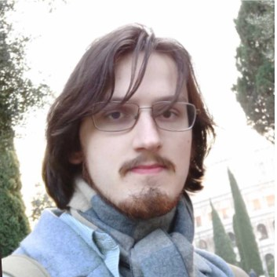

Aleksandras Melnik
Logic · Philosophy of mathematics and physics · Category theory
About
I am finishing an MA in Logic and Philosophy of Science at the Munich Center for Mathematical Philosophy (LMU Munich), working with John Dougherty, after a BSc in Mathematics at Vilnius University. I am looking for a PhD position starting in 2027.
My MA thesis uses logic and category theory to ask when two formulations of a physical theory are equivalent: when are two descriptions of the world really the same theory, and when do they differ in content?
Research interests
- Equivalence of theories: definitional, Morita and categorical equivalence
- Model theory and category theory applied to physical theories
- Symmetry and structure in general relativity and quantum theory
- Categorical logic and the foundations of mathematics
Education
- 2024–2027
- MA in Logic and Philosophy of Science, MCMP, LMU Munich (expected April 2027). DAAD scholarship.
- 2020–2024
- BSc in Mathematics and Applications of Mathematics, Vilnius University
Talks
- Jan 2026
- Grounding and Explanation Converging in Mathematics, Nineteenth Annual Cambridge Graduate Conference in Philosophy of Mathematics and Logic, University of Cambridge
- Nov 2025
- Justifying the Laws of Logic, Vilnius Philosophy Graduate Conference, Vilnius University
- 2023
- Category-Theoretic Models for Mereology, Vilnius University Philosophy Student Conference
Work in progress
Nothing to Reduce To? A paper on symmetry, sophistication and theory equivalence.
Selected honours
- Bronze medal, International Mathematical Olympiad, 2020
- DAAD scholarship for master's studies, 2024
Teaching
Lecturer at the Lithuanian national training camps for the International Mathematical Olympiad, the Middle European Mathematical Olympiad and Baltic Way, 2021–2024.
Skills
Proof assistants: Lean, Rocq. Programming: Python, C++, R, SQL. Languages: Lithuanian, Ukrainian, English, French, Russian.
Reading groups I organise
- Differential Geometry Reading Group (LMU Munich, 2026–present), on Nestruev, Smooth Manifolds and Observables
- Category Theory Reading Group (LMU Munich, 2025), on Goldblatt's Topoi and Awodey's Category Theory